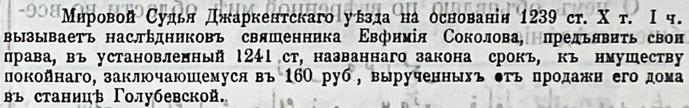

Zeitungsecke · 1895
Мировой судья Джаркентского уезда вызывает наследников священника Евфимия Соколова предъявить права на наследство — 160 рублей от продажи его дома в станице Голубевской.

СОВ, № 26, 01.07.1895, с. 270.
«Мировой Судья Джаркентскаго уѣзда на основаніи 1239 ст. Х т. I ч. вызываетъ наслѣдниковъ священника Евфимія Соколова, предъявить свои права, въ установленный 1241 ст. названнаго закона срокъ, къ имуществу покойнаго, заключающемуся въ 160 руб., вырученныхъ отъ продажи его дома въ станицѣ Голубевской.»
Находка: Светлана СИ, форум ВГД — ссылка на сообщение.